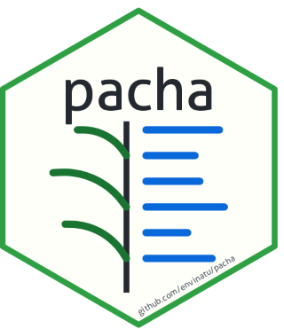

pacha is an R package designed to query and report on taxonomic and ethnobotanical checklist data. It provides functions to query the ‘Listado de plantas de uso y aprovechamiento sostenible en Ecuador’ checklist (doi:10.48580/dgvrn)—retrieved via ChecklistBank or a local Catalogue of Life Data Package (ColDP) archive—and generates Markdown reports for reproducible workflows. Built on the flexible ColDP schema, the package can be pointed at any ChecklistBank-compatible dataset beyond the Ecuador checklist, complete with support for extensible language dictionaries.
All user-facing results default to Spanish; language dictionaries are read dynamically from inst/lang/*.yml, so adding a language is a matter of dropping in a new file rather than changing code — set your language with pacha_configure().
Query functions (common_names_pacha(), establishment_pacha(), sustainable_uses_pacha(), threat_status_pacha(), reference_pacha(), is_listed(), pacha_sc_full_name(), compare_pacha()) return plain data/text. Markdown-formatted reports for direct inclusion in documents are produced by pacha_report().
Installation
Install the latest development version from GitHub:
install.packages("pak")
pak::pkg_install("envinatu/pacha")Quick start
Resolve the accepted scientific name:
pacha_sc_full_name("Bidens andicola")Check whether the species is present in the checklist. Setting detailed = TRUE additionally returns its sustainable-use records:
is_listed("Bidens andicola")
is_listed("Bidens andicola", detailed = TRUE)Retrieve individual pieces of information about the species, such as common names and establishment status:
common_names_pacha("Bidens andicola")
establishment_pacha("Bidens andicola")
sustainable_uses_pacha("Bidens andicola", use = "medicinal")Generate a single Markdown block combining the scientific name, common names, and sustainable uses, ready to be inserted into a Quarto or R Markdown document:
pacha_report("Bidens andicola")Retrieve the citation for the dataset:
pacha_configure() also exposes language (see above), fetcher (swap the underlying HTTP client, e.g. for testing or caching), use_exclude_pattern and labels (control which taxa/fields are filtered or how they’re labelled), source and timeout (network request timeout). See ?pacha_configure for the full argument reference.
Contributions that generalize dataset-specific assumptions, add wrappers to the indexation_urls_pacha() family for other indices, or expand inst/lang/*.yml with new languages are very welcome — see CONTRIBUTING.md.
Data sources and attribution
The package is a query client and does not redistribute underlying datasets. Users are responsible for complying with source licenses, terms of use, and proper citation requirements for any dataset queried through pacha. Results may vary or change as remote services and underlying data sources are updated.
Code of Conduct
Please note that the pacha project is released with a Contributor Code of Conduct. By contributing to this project, you agree to abide by its terms.